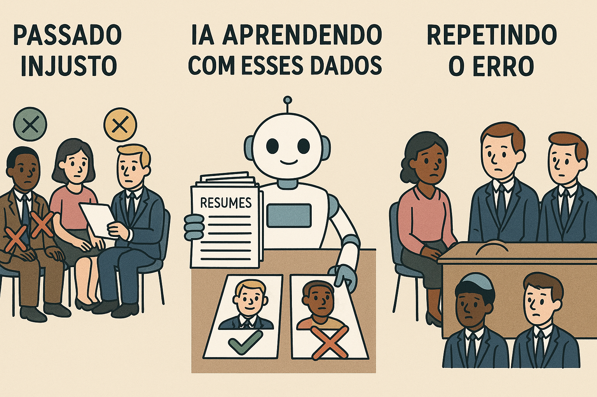

A naturalização do uso de tecnologias digitais no cotidiano — como reconhecimento facial, assistentes virtuais e aplicativos de saúde — tem mascarado práticas que comprometem direitos fundamentais. A promessa de praticidade e eficiência frequentemente se sobrepõe a discussões essenciais sobre privacidade, consentimento e justiça. O uso dessas ferramentas, sem regulamentação adequada, tem aprofundado desigualdades estruturais já presentes na sociedade. Como aponta Safiya Noble (2018), os algoritmos não são neutros: refletem e reproduzem os vieses e preconceitos de seus desenvolvedores e das bases de dados utilizadas, muitas vezes invisibilizando grupos historicamente marginalizados.
Diversos estudos já demonstraram que tecnologias de reconhecimento facial, por exemplo, apresentam taxas de erro significativamente maiores ao lidar com rostos de pessoas negras e mulheres (Buolamwini & Gebru, 2018). Essas falhas não são apenas técnicas — são políticas, pois colocam em risco a integridade física e moral de certos grupos. Além disso, há uma crescente opacidade quanto ao armazenamento e uso dos dados coletados, especialmente por empresas privadas que atuam no espaço urbano sob justificativas de segurança. Essa dinâmica evidencia a urgência de uma governança algorítmica baseada na transparência, no controle social e no direito ao não monitoramento.
O avanço da inteligência artificial precisa ser acompanhado por um debate público qualificado, que considere seus impactos sociais e éticos. A ausência de regulação permite que o chamado "solucionismo tecnológico" imponha soluções digitais para problemas complexos sem participação cidadã efetiva (Morozov, 2013). Para garantir que os avanços tecnológicos promovam inclusão em vez de exclusão, é fundamental envolver áreas como filosofia, antropologia e sociologia na construção de políticas públicas e no desenho de sistemas digitais. Apenas uma abordagem inter e transdisciplinar será capaz de equilibrar inovação com justiça social.